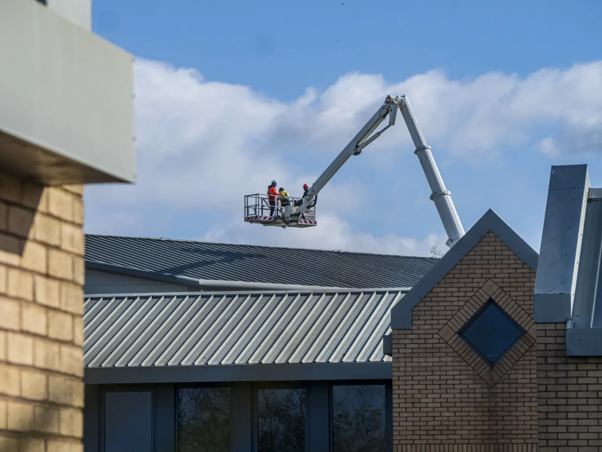

What happens during a professional roof inspection?
Climbing onto a roof is dangerous. Here is what licensed trades check to give you peace of mind without sales pressure:
- Visual and photographic inspection of metal profiles, fasteners, and tile mortar.
- Check of high-risk penetration points (valleys, skylights, vent flashings).
- Clear 48-hour photographic summary with honest recommendations.